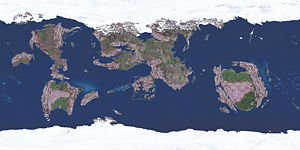

Dungeons & Dragons
Dungeons and Dragons (D&D, Подземелья и драконы) — система правил для настольных ролевых игр от фирмы TSR Inc.
Advanced Dungeons & Dragons
Checklist
Monster Manual
Chainmail
d20
История
Dungeons & Dragons
Tomes
ЛКИ
Dungeons & Dragons 3ed
Monstrous Arcana
Пришествие четвертой редакции
Редакции
Словарь
- Advanced Dungeons & Dragons
- Dungeons & Dragons
- d20
- Dungeons & Dragons
- Basic Dungeons & Dragons
- Advanced Dungeons & Dragons
- Advanced Dungeons & Dragons 2
- Dungeons & Dragons 3
- Dungeons & Dragons 3.5
- Dungeons & Dragons 4
- Dungeons & Dragons 5
Суть такова
Местным божком D&D является Данжен Мастер (он же Гейм Мастер, Дайс Менеджер, Гейм Менеджер etc), сокращённо, чаще всего, ДМ. В то время как контингент игроков составляют гики и нерды. Все эти неординарные личности в количестве одного ДМ и пять-шесть игроков собираются в заблаговременно оговоренном месте, чтобы приобщиться к Игре.
Теперь можно бросать кубики… Что это! Это кубики? Что-то тут не в порядке. Кубики D&D, они же дайсы, являются объектом лютой НЕНАВИСТИ, из-за их немного нестандартного количества граней и тенденции выдавать числа, которых ты совсем не хочешь. В то время как обычный кубик имеет 6 граней, набор дайсов для игры в D&D состоит из 4, 6, 8, 10, 12 и 20 гранных кубиков. При этом большинство систем прекрасно без них обходятся, ничего не теряя в плане механики, но символом собственно D&D некубические кубики были и остаются.
Десятигранных (d10) кубиков, как Вы могли заметить, целых два. На одном цифры от 0 до 9, а на втором от 00 до 90 с шагом 10. Если их бросать одновременно, то получается число от 0 до 99. Один раз анонимус целый час кидал эти два чёртовых кубика и ни разу не выпало 99.Другой анонимус подсказывает, что по теории вероятности число 99 выпало бы рано или поздно, так что надо было кидать дальше. Можно, конечно, бросать один и тот же десятигранник дважды (первый бросок — десятки, второй — единицы), но два кубика в комплекте стоят дороже.
Есть и отдельные стогранные кубики для отдельных любителей игры. Кстати, та здоровая шароёбина на картинке справа — всего лишь пятидесятигранник. Так что кубиками их уже не назовёшь, не правда ли?
Данжен Мастер
Гейм-мастер является, собственно, координатором игры, придумывает сюжет и реагирует на действия игрока. Фишка в том, что за любым заявленным действием игрока (будь то ковыряние в носу либо страшное колдунство) следует бросок кубика со стороны ГМа и его реакция на ситуацию в зависимости от результата броска. Анонимус как-то три раза кидал кубики, чтобы нанести урон оппоненту с помощью пинка.
Основной кубик — двадцатигранный (для простоты его называют d20), где единица означает эпик фэйл (вы ковырялись в носу и сломали себе указательный палец на правой руке, перелом открытый — вы теряете возможность стрелять из лука и истекаете кровью), а двадцатка — эпик вин (охреневшая партия наблюдает, как из расщелины в полном боевом обмундировании быстро-быстро маша руками медленно поднимается гном). Промежуточные же значения, в зависимости от разных факторов объявляются либо вином, либо фэйлом.
Сеттинги
Сеттингом называют придуманную вселенную или мир, в котором происходят действия D&D игр. В принципе сеттингом можно назвать любой мир, придуманный кем-либо, просто исторически так сложилось, что под этим словом понимают именно вымышленный мир ролевых игр.
Сеттингов для проведения сотонинских игрищ существует очень много. Самые известные: Dragonlance (с кендерами, ельфами, гнумами и карапузами), Forgotten Realms (тот самый Фэйрун с Дриззтом До’Урденом и прочее high fantasy с ельфами, гнумами и карапузами), Ravenloft (dark fantasy с готикой, вампирами и вурдалаками, а также ельфами, гнумами и карапузами), Planescape (другие измерения, планы, порталы, божественные создания невиданной мощи, а также, иногда, ельфы, гнумы и карапузы). Есть даже постапокалипсис Dark Sun (по традиции с ельфами-цыганами и хоббитами-людоедами).
А теперь чуть подробнее об этих и других событиях.
Dragonlance
Сеттинг по книге (точнее, целой серии книг) «Dragonlance» aka «Сага о Копье». Что имеется — неидеальный мир по имени Кринн, на котором счастливо живут много-много народов, от самых обычных людей-гномов-ельфов до кендеров (типа хоббитов-цыган, которые очень любят гулять где только можно и пиздить все, что плохо лежит и на что хорошо стоит) и драконидов (а-ля орки с крыльями и ихтиозом по всему телу).
Смысл (по книге): жили были люди-нелюди, имели веру в некий пантеон богов. Затем приключился Второй Удар, в результате которого оперативно исчезли некоторые моря, появились новые, ушли под землю города и все такое прочее в духе БП. Люди в процессе хватали адреналин и молили богов о помощи, но те ничего не сделали. В итоге люди на них обиделись и придумали себе новых богов, которые должны были быть могущественней, чем старые. Но, как оказалось, старые боги никуда не делись. Наоборот, они внимательно наблюдали за Кринном. Видя там, внизу, такой пиздец одна богиня, Такхизис ака Владычитса Тьмы, решила получить профита и захватить мир путем выпиливания всего, что дышит, дергается и лупает глазами. Но туда же, на Кринн, вслед за Такхизис, спустился бог добра, тепла и любви Паладайн, для того, чтобы потроллить героев и оказать им помощь.
Собстна, тут и начинаются события первой книженции «Драконы Осенних Сумерек» за авторством М.Уэйс и Т.Хикмэн. Что интересно, весь сюжетец первых книг был придуман как приключение, то есть по сути являлся одним из OVER 9000 написанных задротами на коленке модулей. В дальнейшем это разродилось в эпичнейшую серию на 48 томов.
Описывать всех персонажей этой хуиты не представляется возможным, так как из 48 томов изначальные главные герои задействованы примерно в десятке. В остальных описаны похождения их детей, предков, партии драконидов, минотавров, эльфов, и еще тучи пати разной степени отмороженности.
Forgotten Realms

Карта Торила (проекция Меркатора)
Данный сеттинг был придуман Эдом Гринвудом и впервые по нему появились работы в 1987 году. Это некая планета, под названием Абер Торил, находящаяся где-то в ебенях бескрайнего космоса. Нам этот сеттинг наиболее известен по большой части материка под названием Фейрун и синезадому остроухому выродку Дриззту До’Урдену. Наряду с Драгонленсом, этот сеттинг один из самых популярных. По нему также написано масса книг и выпущено много компьютерных игр.
Суть такова. В этом мире (по крайней мере, в большей его части) почти нет больших государств и империй. Зато есть торговые города, королевства с населением чуть более 9000 человек, куча неведомых тропинок, Древние Империи и прочее в таком духе. Помимо этого, невероятно обширный пантеон божеств, каждое из которых (За исключением верховного бога Ао — которому почти всегда на все похуй) может принимать активное участие в земной жизни. История хранит немало уничтоженных городов, порушенных империй и убитых героев, на которых простерлось недовольство того или иного небожителя. Также стоит отметить Underdark (Подземье), подземный мир ничуть не уступающий в размерах поверхности. Местами он населен даже гуще чем местность наверху, а уж тайн, артефактов и загадок в нем — хоть жопой ешь. Как видно из описания, это идеальный мир для большинства партийных приключений. От банальной классики с убийством дракона, до интриг в больших городах, таких как Waterdeep (Глубоководье), Athkatla (Аскатла), или, скажем, Neverwinter (Беззимье). В теории возможны даже путешествия по Америке времен первых поселенцев, конкистадоры из Амна, регулярно отплывающие в здешнюю Америку, не дадут соврать. А при желании можно даже поучаствовать в восточных сказках, благо восточно-арабские области имеются. Надо отметить, они серьезно нарушают систему маленьких стран более популярного запада.
К сожалению, с выходом четвёртой редакции сеттинг подвергся весьма серьёзным изменениям, так что некоторые игроки просто с гневом послали все свои годы, потраченные на его изучение, ко всем чертям. Была изменена карта мира и вдобавок выпилена чуть ли не половина всего пантеона. Например, бедную Мистру выпилили уже, наверное, раз в третий. Спасибо следует говорить не кому-нибудь, а самому Сальваторе, который является главредом сеттинга и позволяет всяким мелким графоманишкам невозбранно менять весь мир своими высерами вроде «War of the Spider Queen» и «Lady Penitent».
Известные персонажи:
- Elminster of Shadowdale
- Drizzt Do’Urden
- Cadderly Bonaduce
- Volothamp «Volo» Geddarm
DarkSun
Постапокалиптический сеттинг, действие происходит в мире Athas после Большого Пиздеца. БП был вызван злоупотреблением колдунством, и отношение к магам там соответствующее. Мир представляет собой практически каноничный Wasteland — пустошь с оазисами-городами и гопниками с монстами, разгуливающими между ними. Нету б-гов (жрецы поклоняются стихиям), маги черпают магическую энергию из живых организмов, за что их люто, бешено ненавидят друиды. Алсо присутствуют лысые дворфы, злые эльфы и прочие взаимоисключающие параграфы. К третьей редакции развитие заглохло, а на четвёртую переносить поленились даже поклонники. на четвёртую сеттинг был таки перенесён самими Визардами. Не очень-то и хотелось.
GreyHawk
Дефолт-сеттинг всех редакций вплоть до 4-й (теперь это Forgotten Realms) и вообще первый официальный сеттинг D&D. Несмотря на это, известен по большей части, только у западных настольщиков. Именно там появились «именные» заклинания Melf’s acid arrow, Bigby’s … Hand, Tenser’s transformation, а также дроу.
Planescape
Метасеттинг, который должен был связать сотни других сеттингов воедино, а также удовлетворить потребности манчкинов в убермонстрах, убойных вундервафлях и потребности задротов, переигравших по 9000 квестов в каждом из вышеперечисленных миров. На деле это получилось не очень, так как создатели явно работали под сильными веществами, и Planescape доступен к пониманию где-то 3.5 фоннатам D&D. Тем не менее, с первой задачей он полностью справлялся до четвёрой редакции правил, когда стройную космологию выпилили для возможности приобщения к D&D 95% населения/
История
Система была создана в 1974 году Гэри Гигаксом (вечная память) под названием Dungeons & Dragons и была продолжением его же варгейма Chainmail. Присутствие всем известных фэнтезийных существ даёт возможность проводить параллели с фэнтезийным миром Толкина, хотя Гигакс утверждал, что его влияние было минимальным.
В 1977 году в систему добавили побольше матана и назвали Advanced Dungeons & Dragons. Однако базовая система D&D не была выброшена на мороз, а выходила вплоть до 1999 года. Последняя книга Dungeon & Dragons Adventure являла собой упрощенный вариант AD&D.
Затем где-то посреди мутных девяностых вышла книга правил D&D 3rd edition. Матана поубавилось. Вернее, его просто привели в божеский вид, чтобы не смущать новичков отрицательными АС, и прочей хуитой и, таким образом, понизить планку вхождения в систему для тех, кто не любит считать. Опять же, на первый взгляд, что вызвало лютые, бешеные срачи между олдфагами («Сраная ДнДа скатилась в сраное гавно», «3-я редакция — не торт» и тому подобное) и ГСМ («наконец-то можно попадание посчитать без калькулятора!»).
Но это исчо шо! В 2007 году вышла четвёртая редакция, основательно перевернувшая систему с ног на кованые сапоги Артаса. Да-да, больше всего D&D четвёртой редакции похожа на «настольный WoW». Естественно, ради срача с поклонниками сей ереси объединились даже сторонники второй и третьей редакций.
D&D насчитывает в общей сложности уже более полторы тысячи книг (дополнения, расширения, сеттинги и прочее). Народ продолжает играть в двушку, в трешку, да и в четверку вроде кое-кто гоняет (жечь их, во имя Импера… ой, что-то я увлекся).
Но самыми главными являются три книги, так называемые core books, в которые входят
- Настольная Книга Игрока или PHB (Players Hand Book), обязательна для прочтения всем игрокам.
- Руководство Мастера или DMG (Dungeon Master's Guide)
- Монстрятник или ММ (Monster Manual)
Мастер может включить в правила своего сеттинга любые дополнения, расширения и даже собственные задумки, не забыв сообщить игрокам о тех, которые должны быть общеизвестны.
Генезис
- Доисторические времена:
- D&D, (Original) Dungeons and Dragons, OD&D (1974) — Оригинальная система достаточно простых правил для воображаемого путешествия по подземельям с драконами.
- AD&D, (Advanced) Dungeons and Dragons (1978) — налепленная поверх (а много где и вопреки) громоздкая детальная система правил на все случаи жизни и смерти.
- Железный век, или Та Самая AD&D:
- AD&D2, AD&D 2nd Ed (2nd Edition), двушка (1989) — Объединение двух ранних подвариантов в один, шлифовка острых углов. На выходе система, в которую немало олдфагов продолжают играть и сейчас как в «последнюю Тру». Также, когда школьник говорит об АДнД, он имеет в виду именно сие творение. Сам того, естественно, не зная.
- На компьютере: Baldur's Gate, Icewind Dale (наиболее значимое).
- Век рок-н-ролла:
- D&D 3rd Ed (3rd Edition), трёшка, тред (2000) — В этот раз перепилено было весьма много. Изменились стацы, был вышвырнут пресловутый THAC0, отрицательный армор класс и другое. На примере спасов — во второй редакции успех зависел целиком от персонажа, в третьей же он стал зависеть от эффекта, от которого спасаемся. Если во второй редакции с ростом уровня перса изменялись сложности его спасбросков вплоть до фиксированных значений, то здесь с ростом уровня перса изменяются лишь модификаторы к броску, а успех зависит от того, сможешь ли ты побить сложность эффекта. По честному надо было бы сделать и так, и так, но создатели треда решили по другому. Возможно, что эта редакция делалась с упором на современные CRPG, когда игроку не нужно думать, какой армор класс лучше, 8 или 9, что ещё за THAC0 такой и почему он постоянно уменьшается, ибо по сравнению со второй в целом вся система была всё же несколько упрощена.
- На компьютере: Neverwinter Nights, Icewind Dale 2, Pool of Radiance.
- D20 System (2000) — построенные на базе трешки правила для ролевых игр По Всему На Свете. То есть без обязательных маскотов серии — подземелий и драконов. Д20 зохавала кучу прекраснейших самобытных систем (да хоть то же Седьмое Море), поскольку была «интуитивна понятна массам». Собственно, идея использовать одну и ту же механику и для магии-эльфов-леголасов, и для общения с Ктулху, и для полетов в космосе, уже была не нова (см. GURPS). Однако успехи Д20 в оговнении всего и вся были воистину феноменальны.
- На компьютере: Knights of the Old Republic.
- D&D Revised 3rd Ed, D&D3.5, триспалавиной (2003) — Фактически, набор багфиксов для трешки. В эпоху широкого распространения модемов купить новую книжку было не только проще, но и дешевле скачивания всех патчей к старой. Утрирую, естественно, но ненамного.
- На компьютере: Neverwinter Nights 2, The Temple of Elemental Evil, D&D Online.
- Хай-тек период:
- D&D 4th Ed, четверка (2007) — Частью игроков называется настольным WoW (OMFG D&D4E is WoW!). Действия обозначаются «карточками» (иконками, да), самодеятельность — основа основ ролевых игр — ВНЕЗАПНО не приветствуется чуть менее, чем совсем. Ах да, и теперь можно играть молча (на манер карточек Магии). Пипл, как обычно, щасстлив. По мнению других игроков, является отличным развитием системы очень сильно сместив её как раз в сторону ролевой игры и уведя от трёшного манчкинизма. Одним словом, имеем классический холивар на тему уже не тот.
Компьютерные игры
На основе правил D&D было выпущено (и выпускается и будет ещё) свыше 9000 игр. Из-за того, что сама система заточена под фентези, большинство этих игр про магию и махание мечом. Но есть и исключения, например, винрарная серия Star Wars: Knights of the Old Republic. В этой игре использовалась система d20 на основе D&D 3 редакции, ИЧСХ, лицензию они таки покупали, выпускали настольник с красивой блямбой «D20 Inside» и тому подобное. Cамые популярные серии игр по D&D — это Baldur's Gate и Neverwinter Nights. Самая винрарная — Planescape: Torment. Самая альтернативно одаренная — The Temple of Elemental Evil: она сделана полностью по правилам (3,5), без существенных отступлений в угоду геймплею, поэтому нормально играть в неё могут лишь истинные ценители. Но, учитывая что игру делали в страшной спешке, анонимус негодуэ из-за багов, коими игра наполнена более чем наполовину.
Геймерами данная система (в частности её третья редакция) считается хардкорной, так как в отличие от большинства интуитивно понятных систем требует нехилого опыта в обращении и наличия головного мозга. Бесчисленное количество вариаций развития персонажа и билдов, а также возможность разработки собственного мега-папки по нраву адептам матана с одной стороны, и хорошо отсеивает гуманитарное быдло с другой.
На самом деле, сложной и хардкорной D&D может показаться только человеку, который никаких ролевых игр кроме компьютерных в жизни не видел. В мире настолок D&D прочно занимает нишу самой что ни на есть кондовой попсы. Бо есть ещё GURPS, которым, как известно, тоже балуются не бог весть какие интеллектуалы. Риальные пацаны играют по Fuzion… но мы ведь не устраиваем холивар, правда? Для этой системы, как и для небезызвестной русской Эры Водолея, не требуется не только знание матана, но и наличие какого-либо мозга вообще. Достаточно всего лишь межушного нервного узла. Я гарантирую это! Всем новичкам от настольных ролевых рекомендуется.
IRL
Собственно игра в дэху протекает приблизительно в следующем ключе.
ДМ описывает со всей своей поэтичностью некую ситуацию, например как игроки заходят в длинный подземный коридор. Далее игроки дают заявки что они делают, например: ковыряются в носу, ищут ловушки или же поя гимны во славу Пэлора идут на пролом (а хули клирик вылечит). При этом если есть, как минимум два варианта куда пойти, то перед сборищем игроков встает неразрешимый вопрос, что делать дальше, идти направо или налево. При этом ДМ может спокойно на пол часа пойти покурить, так как к выяснению такого простого вопроса будут приложены высшие материи типа отыгрыша, в стиле: «Я как добрый и светлый паладин не могу пойти налево!», на что получает законный ответ вора «Комрад, ты это, не глупи, там орками воняет, аж тут слышно». После чего паладин бежит направо с криком: «Наше дело правое! Победа будет за нами!» «Сдохните поганые орки!» и храбро ложиться от 10 732 орков и одного калечного гоблина. В это же время партия освобожденная от такой обузы как паладин, храбро шагает налево.
Тут стоит сказать, что существует некая шаблонность отыгрыша, кстати о отыгрыше. Собственно он и отличает настольную РПГ (не путать с ручным противотанковым гранатометом), от любой другой. Во-первый так как все игроки сидят за каким-то столом и общаются в живую, они не могут просто клацнуть мышой в нужную иконку дабы сделать какое-то действие, но и не могут двинуть кого-то по ебальнику цельнометаллическим дрыном как это делается на полевках. По этому все действия озвучиваются ртом, а мотивация этих действий и называется отыгрышем, который повязан на нижеописанный характер и представления игрока о персе.
Так вот возвращаясь к шаблонности отыгрыша, стоит сказать, что в самой простой версии правил (берем кошерную трешку), есть следующие классы: бард, варвар, воин, друид, клирик, паладин, вор, маг, чародей, рейнджер и монах. По сути дела, каждый класс отыгрывается по-своему:
- так бард, он же бардень представляет собой квинтэссенцию представления игрока о сферических менестрелях в вакууме, в большинстве случаев отыгрывается как блядун с лютней наперевес. Считается самым соционическим классом, так как главный упор делается на харю, обман и дипломатию. По сути дела считается человеком-оркестром: может и мечом махать и спеллы кастовать и на дуде играть, все кроме последнего делает плохо, и в файте редко когда бывает полезен. Анонимус хочет донести, что если играть только соционику или сити-квест, то лучше перса не найти.
- Варвар — это в 9000 случаев тупая дылда, которая рубит всех в капусту по схеме: «раш на центр, а дальше видно будет». Анонимус утверждает, что таковые долго не живут.
- Всякие кастующие персы типа мага и чародея чувствуют себе неимоверно полезными в боевке и соционике, так как 75 % квестов без магии решить сложно, благодаря чему отыгрыш их сводиться к завышению ЧСВ перса до зашкаливания экселраметра. Но все преимущество мага теряется в ближнем бою, где он может лечь с одного-двух ударов.
- Рейнджеры и друиды — отыгрываются по принципу «я из лесу вышел — был сильный мороз» и «не руби деревья, не руби деревья сука».
- Воры с файтерами заняты вполне профессиональным занятием: одни ломают замки и находят ловушки, вторые рубят всех в капусту, но уже с зачатками тактики на уровне «я зайду с фланга», оба же отыгрывают не в рот ебись каких профессионалов своего дела со всей атрибутикой по жанру, будь то трехтонный фулплейт кожи из чешуи с жопы дракона или мега-черный готичный плащ «хуй ты меня увидишь (using by rogue only)».
- Клирики и паладины — это отдельные пациенты этой веселой клиники, отыгрывающие проводников воли господа, при этом последние проводят только добро, а клирики более универсальны и могут работать проводником на поезде какого ни будь там Нерулла — бога смерти и лучей поноса.
- Отдельно стоит сказать, что паладин — это не только ценный меч, но и две-три тонны фулплейта в довесок с ахринительно непрошибаемым отыгрышем «Не делай этого, это зло», который лечиться только фразой «Слыш, пойди погуляй, я за углом слышал крики о помощи», и пока храбрый паладин идет спасать, партия занимается своими обычными делами то есть грабит, убивает, ворует и развлекается любым иным способом. Впрочем, тупые паладины бывают только у тупых игроков, в то время как вменяемые люди отыгрывают палычей вполне вменяемо, анонимус не раз водил партию с паладином во главе отряда и порою сам отыгрывал паладина. Монах же, он же монк, представляет собой сферического шаолиньского монаха, засунутого в средневековый фэнтези мир, который в 95% случаев представляет собой европейское средневековье с перделками и финтифлюшками в виде магии. Очень спорный класс. Новички на нем заваливаются сразу, например дают ему в руки оружие (нунчаки ккамы и т.д.). Скажите мне нахуя? У монаха урон голой пяткой к 4му левелу (по 3.5) достигает уровня двручника (Кстати в той же 3.5 версии на 20м уровне урон монаха становится невъебичен, урон двуручного меча - два шестигранника (2-12), голая пятка монаха 20-го уровня - четыре восьмигранника (4-32)). Или например уверовав, что монах танк кидают его в гущу сражения, где он эпично дохнет. В общем-то монах - персонаж разведки, и прониковения в тылы противника, ибо быстр и ловок. Кстати о скорости, в DnD пчти все имеют одинаковую скорость, а мнах увеличивает скорость с уровнем. То есть что? Правильно, только он сможет в случае чего быстро убежать. Разве что у варвара скорость немного больше остальных, но за монахом ему все равно не угнаться. Алсо отыгрыш монка должен быть переполнен восточной мудростью Конфуция, криков «ки-я!!1» как у Брюса Ли, и ударов по ебальнику ногой с разворота как сами знаете у кого.
Приблизительный алгоритм модуля (несколько квестов, собранных в единую последовательность) зачастую следующий: 1) Привет чуваки я квестовый НПС, и у меня есть для Вас квест. 2)Партия встречает мобов и валит их 3)Партия натыкается на загадку (решение которой зачастую позволяет идти по модулю дальше) 4)Партия валит главных мобов 5)Партия вступает в разглагольствования по поводу нахрена это вообще надо делать — место для отыгрыша 5)Партия заваливает Глав Гада и лутит его, затем делит лут и идет получать бабло с экспой за квест. Собственно все кроме пунктов 1 и 5 может быть разбросано в любом количестве и комбинации. Главное это в конце получить лут и экспу.
Также в целом модули можно разделить на:
- Файтовые. Где надо просто завалить 10 572 орка и одного калечного гоблина, обитающих в неких страшных подземельях, где когда-то очень давно погиб навороченный паладин. Все тупо, как в дьябле, только задача перекидать дайсами ДМ-а. (место для холиваров).
- Социалку. Тут играть надо с умом, все НПС важны для решения модуля. В целом, представляет собой неебически закрученный детектив с интригами и примесью мыльной оперы. Ибо взаимоотношения между НПС уходят корнями в троюродных бабок по дедушкиной линии брата мужа двоюродной сестры младшего сына, но не того, который потерял память, второго советника шестого с краю заместителя лорда нахрен никому не сдавшейся провинции где-то в ебенях на зажопьях карты. При этом все эти взаимоотношения и позволяют угадать, что «Бля, я же говорил, что Глав Гад — вот тот чувак, как его там на Б…., да верно Мартин, ну тот который бродил по замку с окровавленным двуручем в ночь убийства». Стоит сказать, что социалка это основной тип модулей для тех, кто больше любит думать и отыгрывать перса нежели кидать в тупую дайсы и считать дэмагу (еще одно место для холиваров).
- Хорроры. Для достижения лучшего эффекта играться ночью, задача ДМ держать партию в напряжении и пытаться завалить партию самыми готичным способом. В идеале ДМ должен страшить, а партия должна бояться. В жизни выходит редко. В худшем случае под улюлюканье и гам, партия выносит всех присутствующих мобов. Не забывая на выходе заграбастать из мрачного, поросшего плющом, готичного замка все люстры с канделябрами. Обязательными атрибутами является любое готичное пространство, которое нельзя покинуть (а то партия просто разбежится), ночь, гром с молнией, дождь, туман (при этом одновременно), а также вороны и атмосфера медленно крадущегося пиздеца. При хорошем ДМ-стве и нормальной партии можно получить те же впечатления, что и от ночного просмотра годного ужастика одному в чужой квартире.
- Сити-квест. Партия в данном случае гоняется по городу за Глав Гадом, по ходу решая множество разных загадок и изредка валя мелких вражин. Так как загадок нужно много, а хороших интересных загадок мало, ДМ-ить такое сложно, а играть не всегда интересно. Но все зависит от ДМ-а.
- Магик-квест. Тут все сложно, так как построено на высших материях магии, особо опасен из-за большой вероятности получения ФГМ. Суть модуля лежит в пространстве нарушения тонкого астрального взаимодействия визардарной и соркелярной магии, благодаря чему магический эфир переполняется всякой поебенью, из-за которой у местного провинциального архимага флюс. Задача ясна и партия отправляется в ебеня что бы починить какой-то там агрегат по производству маны. Из-за чрезмерной магичности, файтеры и все некастующие чувствуют себя отбросами общества, а кастеры чешут свое ЧСВ. Из-за риска получения ФГМ и постоянной ссылки Дм-а «зис из мэйджик» на любое нелогичное событие, играется не так часто.
- Эпика. Специально заточенный для манчкинов модуль. Игроки неимоверно круты, их уровни зашкаливают за отметку в 20, бонуса ко всему, что только можно стремятся к +40, фаерболы юзаются как средство для разжигания костров, мобы слабы и идут на убой строго взвешенными партиями, так чтобы партия только запыхалась и не потеряла хоть каплю своего ЧСВ. Глав Гад у нас в виде дракона или чего то там еще, может быть и в виде Черного Властелина который на самом деле дракон, сути не имеет, ибо несмотря ни на что выпиливается за пару раундов. На выходе партия получает с разбегу 21 и 22 левел, и всяких маг шмоток на бонус +50 и идет на новый модуль. При этом ДМ может от случая к случаю менять мобов на орков/хобгоблинов/лизардов/гоблинов/багбиров/неведомых тварей (статы как у орка)/хуманов/эльфов/дворфов/гномов/хоббитов — не важно, главное что бы их было много и они мешались бы под ногами партии своими лонгсвордами на 1d8, когда даже у визарда уже 200 hp и AC в районе 40. В общем дьябла только еще более эпичная (место для эпичных холиваров).
Фильмы
В 2000 году вышел унылый (очень, очень; честно, честно) фильм Dungeons & Dragons (в этой стране «Подземелье Драконов»), а в 2005 его ещё более унылое продолжение (как ни странно, назвали его «Dungeon & Dragons 2»). Фильмы доставляли, разве что лютым поклонникам серии и тупым пиндосам, ибо на 95 % состоят из бессмысленной и беспощадной ролевки на выезде + быдлоспецэффекты. Всё CGI было выполнено на 3DS MAX, но бедная софтина в том не виновата: во−первых, тогда она просто не была предназначена для кинопродукции (да и сейчас не очень), а, во−вторых, эффекты, по ходу, делали упоротые D&Dфаги, после двух недель ебли мануалов. Такие дела.
Также был абсолютно винрарный самодеятельный фильм «the Gamers» (с продолжением), имеющийся на тыТрубе, состоящий из ролевого юмора чуть более, чем полностью. Тем, кто в теме хотя бы на 5 %, стоит посмотреть. Лулзы в духе «медленно поднимающегося гнома» составляют весь основной костяк фильма.
А ещё был мультсериал восьмидесятых «Dungeons and Dragons» про группу школьников, решивших покататься на одноименном аттракционе и в результате попавшим в фентази-мир, где каждый из них получил особые артефакты, дающие способности соответствующих D&D классов (маг, воин, лучник и прочие) и теперь, для возвращения домой, им нужно пройти много опасных приключений… ну, все как положено. Детишкам «помогает» повелитель подземелий (собственно DM) — обычно тем, что дает туманные советы после чего съебывается. Относительно смотрибельный мультик, в этой стране демонстрировался под названием «Драконы Подземелий» в начале девяностых.
В восьмидесятые же был снят хреновый фильм «Mazes and Monsters», про то как группа гиков, играющих в некое как-бы-ДнД, внезапно сходит с ума. В фильме играл молодой Том Хэнкс.
Фильм-серия Футурамы «Игра Бендера» на 75 % состоит из лютого, бешеного стеба над D&Dшниками.
Меметичность
- Кроме игрушек известна, в основном, благодаря винрарнейшей таблице мировоззрения (Alignment), которая рискует пережить саму систему. Винрарна она, правда, именно что как мем, а как элемент игромеханики является, по мнению некоторых, говном, в связи с нежеланием и неумением, собственно, это мировоззрение отыгрывать. Игрок может невозбранно выбрать CE персонажа, но строго следовать своему мировоззрению он в большинстве случаев не будет, так как практически никто не может себе представить психологию поведения такого человека, эльфа или гнома. То есть полного психа, разрушающего всё на своём пути, отыграть может мало кто. В четвёртой редакции её наконец перепилили на радость ненавистникам, оставив лишь несколько комбинаций, так что теперь она не значит практически ничего.
- Также на основе настольных игр родился мем паладин и газебо.
- Систему, как и игры на её основе, периодически называют богохульственной (за возможность поклонения разным языческим богам, вызовы демонов и прочее). Смотри, например, статью «AD&D — игра Сотоны!» — вброс на тему (нетрудно заметить, что автор сам хорошо знает AD&D). Началось всё ещё с первой редакции, где были демоны и дьяволы. В связи с недовольством некоторых групп верующих людей, их потом на время второй редакции переименовали в танар’ри и баатезу соответственно. Теперь же на это забили и вернули привычные названия обратно, также оставив и новые.
Троллинг
- "Dungeons & Dragons won't make you cool." Самое простое, что можно сделать, это объявить, что все эти ваши игры — для прыщавых лузеров, которые IRL ничего из себя не представляют и хотят быть крутыми хотя бы в вымышленном мире. Толсто и сердито. Работает с переменным успехом.
- Последние вышедшие игры (в частности серия NWN) заточены под создание собственных модификаций и сетевую игру, однако сама система никак не рассчитана на паритет различных классов, или хотя бы на стандартную схему «камень-ножницы-бумага» — тут кастеры, за редкими исключениями, уделывают всех, плюс есть узкоспециализированные классы, которых лупят все. Что рождает дополнительные срачи (маги — имба, нерфить!) и холивары (клерик-маг, кто круче?). Соответственно, зная правила в достаточной мере, троллить игроков не просто, а очень просто.
- Манчкинов — выискиванием слабых мест в их билдах, можно откинуться на спинку кресла и слушать как они будут распинаться в ответ. Представителей слабых классов и тру-ролевиков (которые, обычно, являются одними и теми же людьми, в силу прогрессирующего ГСМ не умеющими создать нормальный билд), жалующихся на слабость своих классов и трудный кач хорошо осаживать тем, что они, ведь, тру-РП, зачем им для отыгрыша мега-папка, отыгрывать ведь можно даже первым левелом. Для большей толстоты троллинга можно просто намекнуть на криворукость такого игрока и нежизнеспособность его билда.
Вышеописанное, кстати, прекрасно иллюстрирует один известный факт, а именно то, что большинство игроков в D&D зациклены на манчкинизме. То есть на «оптимизации», «балансе», «прокачке» и прочем фапе на циферки. Манчкинизм заложен в самой концепции D&D и поощряется системой с её «экспой» и «уровнями». Зайдите на любой форум ДнДшников, и что вы там увидите? Балансосрач и «оптимизацию персонажей». На некоторых форумах этой самой оптимизации посвящены отдельные подфорумы. Про собственно ролевую игру, отыгрыш и прочее, уже мало кто вспоминает, и создается впечатление, что люди играют в настольную версию Diablo. Так оно, в общем-то, и есть. Фимозность всей этой ситуации просто зашкаливает. При этом сами ДнДшники настолько увлечены дрочкой на циферки и крутость своего персонажа, что даже не осознают полного идиотизма подобного занятия, и уверены, что являются тру-ролевиками, ИЧСХ, данной болезнью поражены как настольные, так и онлайн версии игры. Даже на шардах, позиционируемых как чисто ролевые, лютый манчкинизм цветет и пахнет! А разгадка одна — возможность PvP, встроенная в игры. Данная проблема, кстати, решена в ММО D&D Online, где на момент её выхода возможностей PvP не было вообще, все было заточено сугубо под командную игру (читай — графическую настолку), как и задумывалось изначально в самой концепции системы. Теперь, по прошествии времени, есть и PvP, но на него всем глубоко фиолетово.
- Поскольку многие игроки являются фимозниками чуть более, чем наполовину, всегда можно зайти на какой-нибудь форум или канал чата и что-нибудь вбросить эдакое, типа «а что такое d20» или «а я читал правила и никакой диван меты не видел». Поначалу вас могут игнорить, но, если сильно постараться, можно получить отборный выброс говна, а в противном случае просто бан. К сожалению, игроки они такие. Цыничные (sic!) и беспощадные. Шуток не понимают. Так что успешный троллинг в общем-то зависит от знания предмета самим троллем и грамотной игры на ЧСВ поциентов, которое у них вырывает стрелку нахрен из прибора при попытке измерения. В крайнем случае, всегда срабатывает переход на личности, так как многие игроки, проводя бессонные ночи за штудированием рулбуков, балансированием персонажа и мастерением игр на форумах, начинают чересчур вживаться в образ и потихоньку терять связь с реальностью. Так что можно сказать какому-нибудь игроку, отыгрывающему какого-нибудь CE воена 4/вора 10/архимага 2/дивайн чемпиона 3 и так далее, дроу 27 уровня, что он бессердечная тварь и такой же тупой задрот по жизни, как вы ТУТ ЖЕ соизволите убедиться, что это не так, и что данный человек обладает широчайшей душой и всегда готов проявить искреннюю христианскую любовь к любому ближнему. Вот так. Анонимус лично имел возможность причаститься к этой любви, когда после продолжительного присутствия на IRC-канале в ответ на простые вопросы искренне ищущего человека был игнорируем, а затем после одного неудачно сказанного слова просто получил бан.
Немного искромётного юмора и тонкой иронии
Кодекс чести Игрока
- Не спорь с мастером. Понятно, мастер всегда козел. Но имей совесть, ему вести игру гораздо сложнее, чем тебе с ним ругаться. Если совсем не нравится — выйди из игры, твои нервы стоят того, чтобы их беречь.
- Не спорь с кубиком. Это еще хуже, чем спорить с мастером, кубик — тварь бессловесная.
- Отыгрыш. Полезно помнить, что герой, которого ты отыгрываешь, вероятно, никогда не бывал там, где живешь ты, а, следовательно, пользуется собственной лексикой (как правило игровой), чего в игре и Вам желаем. Тем более, какой-нибудь сэр Галахад был бы несколько удивлен, если бы кто-то выскочил на дорогу и обозвал его Колей, Васей, Петей…
- Играй и дай играть другим. Если ты хочешь доказать всему миру, что ты крут, поверь, никто и не думает в этом сомневаться. Блестяще решить поставленную мастером задачу намного почетнее и приятнее чем растоптать другого игрока. Нет сомнений, что кое-кого и следовало бы скормить муравьям еще в самом начале, но будь джентльменом. Удовольствие от игры должны получать все, а не ты один (к Вам, леди, это тоже относится). Господа игроки и мастера! Если вам попадется такой эгоистичный Альфонс — мочите его, он гнусный тип!
- Герой должен вести себя прилично. Поставь себя на место героя. Навряд ли ты будешь бродить по миру, делая конец жизни всем, кого ни встретишь. Сомнительно, что ты станешь без нужды чистить зубы крокодилу, надеясь, что мастер тебе как-нибудь не даст пропасть. Побьемся об заклад? Нет? Жаль. (Отсылка к мировоззрению очевидна — прим. ред.)
- Если мастер что-то забыл — напомни ему. Согласись, некрасиво, когда один персонаж волочит ножку из-за лишней пластины в доспехе, а другой танцует кадриль, обвешанный зенитной батареей (даже, если этот другой — ты).
- Привыкай думать самостоятельно. До каких пор мастер будет подсказывать тебе каждый шаг? Чай, большой уже, вон в какие игры играешь. Не лезь ты постоянно за откровениями, тоже мне любимец богов. Действуй, и кто сказал, что ты сам придумаешь хуже?
- Не ори на весь континент. Очень мило. Герои находятся в разных концах света, да еще и знать не знают друг друга, зато один игрок вовсю наущает другого, что ему делать, подает наводящие реплики типа «Козел», «Болван», «Молодец»… Что, барон, изобрели радио за семьсот лет до Попова? А не сожгут? Хочешь подсказать неопытному игроку — пожалуйста, но спроси сначала разрешения у мастера.
- Шпионь по игре, а не по жизни. Если в твоем присутствии мастер сказал другому игроку то, чего твой герой знать не может, — выбрось это из головы. Ты этого не знаешь. Особенно не имей привычки подслушивать, если мастер специально отошел с игроком в сторонку. Вспомни участь любопытной Варвары и закрой лапой нос.
- Развивайся. Часто игроку позволено пользоваться пожизненными знаниями, поэтому знания, которые ты получишь в любой области, могут оказаться полезными. Если же тебе приходится объяснять, чем отличается Перун от шестопера, это раздражает и снижает твои шансы. Иногда невежество приносит больше вреда, чем реактивный снаряд.
Кодекс чести Мастера
- Игру, как и революцию, нужно готовить. Прежде, чем начать игру ее следует, как минимум, придумать. Игра, как и салат, считается хорошей, если в ней есть все — и побегать и подумать и помахать кулаками… Притом цель игры и основные закулисные действия (хотя бы некоторые) должны быть продуманны заранее, а то «иди туда, незнамо куда» интересно только первые сорок пять минут. Стоит заранее продумать характеры некоторых персонажей, чтобы потом они не были похожи друг на друга, и все — на тебя. Если же ты сам не знаешь ничего о тех условиях, в которые попадут игроки (история, география, традиции…), то вообще не лезь мастерить. Пусть лучше будет скучно, чем стыдно.
- Не топи утопающих. Мастер, который специально торбит игроков (имеется в виду всех сразу, так как торбить выборочно вообще запрещено, см. правило II), еще гаже, чем игрок, который топит всех, возвеличивая себя. Ты-то чего добиваешься? Еще возьми и начни кому-нибудь подыгрывать, и никто не скажет, что ему будет недоставать тебя, как мастера…
- Мастерскому произволу — бой по почкам! Ты, конечно царь и бог в одном лице, как египетский фараон, но не забывай прислушиваться к мнению игроков. Это удивительно, но они иногда бывают правы.
- Будь беспристрастен. Самое сложное в жизни мастера это беспристрастие, особенно, если возникает конфликтная ситуация между героями. В таких случаях очень сложно доказать (в том числе и себе), что ты не оказал кому-то особого предпочтения. Здесь полезно применять четкую систему, по которой игроки сами смогут понять, кто из них победил, и спихнуть большую часть своей ответственности на кубик. Для поединков между героями строго рекомендуется подобная система. Каждому мастеру следует на всякий пожарный разработать ее или найти готовую.
- Мастерский персонаж. Дабы скрасить себе жизнь, мастер может ввести в игру персонажа, которого незримо отыгрывает он сам. Но давайте иметь совесть, мастерский персонаж может быть крут, но не может быть не мерян, если ты понимаешь, о чем речь. Он тоже должен иметь слабые места и его судьба тоже должна решаться по закону вероятностей. А еще он может влиять на исход игры только вместе с персонажами игроков.
- Играй со всеми. Элементарные правила приличия подсказывают нам, что в большинстве случаев мастер должен оказывать одинаковое внимание всем играющим, так как играть обычно хотят все. Зациклишься на ком- нибудь, потом храп остальных будет отвлекать и мешать.
- Ты должен растолкать вечный двигатель. С какими бы опытными игроками ты ни имел дело, инициатива должна исходить и от тебя тоже. Не игроки придумывали твою игру, поэтому не удивляйся, если даже самый классный игрок ведет себя как дитё. Тебе сверху все кажется проще. Периодически давай игрокам пинка в нужном направлении (ну или хоть в каком-нибудь, если не хочешь в нужном), а выпавшую челюсть пусть уже подбирают сами. Что ты им нянька что ли?
- Храни тайну игрока. В идеале игроки должны знать только то, что они должны знать и не больше. Поэтому будь внимателен и постарайся не заложить одних игроков перед другими. «Путай следы», договорись об условных фразах, отводи игроков в сторону и отыгрывай с ними отдельно, в общем, крутись, как умеешь. Гораздо проще сделать так, чтобы человек чего- либо не узнал, чем потом убедить его в том, что он этого не знает.
- Развивайся. Есть смысл объяснять нафига попу гармонь а мастеру — эрудиция? Не понимаешь, зачем гармонь? Как и следовало ожидать, по второму вопросу возражений не будет. Зачем эрудиция? Если до сих пор не ясно, помастери, а потом перечитай это место снова.
Dungeons & Dragons (дословно — «Подземелья и драконы», сокращается до D&D или DnD) — настольная ролевая игра в стиле фэнтези, выпускаемая компанией Wizards of the Coast. Это не только первая, но и самая популярная система ролевых игр в мире, пережившая много переизданий и изменений.
Придуманная в 1970 и выпущенная в январе 1974 года первая редакция D&D была и самой первой ролевой игрой в мире. Правила для неё придумал Гэри Гигакс на основе правил своей военно-тактической игры Chainmail, доработав её ролевую составляющую вместе с Дэйвом Арнесоном. На правила оказали влияние настольные стратегические игры 50-60-х годов, главным образом военно-тактические игры с миниатюрами, в которых отдельные боевые единицы отображались на столе при помощи фигурок.
Присутствие полуросликов, эльфов, дварфов, орков, драконов и прочих фэнтезийных существ даёт возможность сравнивать мир D&D с работами Дж. Р. Р. Толкина, хотя Гигакс утверждал, что влияние «Властелина колец» было минимальным, а использование элементов из трилогии — маркетинговый ход. На сюжетную основу переизданных правил 1977 года оказало влияние творчество таких фантастов, как Роберт Говард, Эдгар Берроуз, Майкл Муркок, Роджер Желязны, Пол Андерсон, Абрахам Меррит и других.
Структура
В игре участвуют мастер игры, ДМ (калька с английского: DM — Dungeon Master) и несколько игроков, обычно от двух до восьми, но ограничений не существует (см. сольное вождение, большая партия). Каждый игрок обычно руководит действиями одного персонажа игрового мира. Мастер не имеет собственного персонажа в игре, но он действует от лица всех неигровых персонажей (NPC — Non Player Character). Также мастер описывает сам мир и происходящие в нём события.
В ходе игры каждый игрок задаёт действия для своего персонажа, а результаты действий определяются мастером в соответствии с правилами. Случайные события моделируются броском соответствующего дайса. Иногда решения мастера могут не совсем соответствовать правилам. Золотым правилом всех редакций является тезис «ДМ всегда прав», также называемый «мастерским произволом».
Традиционно руководство игры или свод правил включает в себя три книги: «Player’s Handbook», «Dungeon Master’s Guide» и «Monster Manual». Также существуют различные дополнения, которые мастер может использовать в игре полностью или частично по своему усмотрению. Основным, а иногда и единственным, требованием для игры является наличие листов персонажей и набора кубиков (d4, d6, d8, d12, d20, два d10).
Версии
Правила Dungeons & Dragons прошли через несколько редакций.
Оригинальные правила были опубликованы в 1974 и были дополнены в следующие два года. Официальные и популярные неофициальные дополнения публиковались в журналах The Strategic Review и Dragon Magazine.
В 1977 TSR выпустила две новые версии: Advanced Dungeons & Dragons и Dungeons & Dragons.
Dungeons & Dragons был облегчённой (вводной) версией игры. В 1977 году Dungeons & Dragons Basic Set, также называемый Вторым изданием, был выпущен в боксовой версии. Это издание было исправлено в 1981, одновременно с выпуском Expert Set, дополняющего основные правила. Между 1983 и 1985 было выпущено Третье издание серией из пяти боксовых наборов: Basic Rules, Expert Rules, Companion Rules, Master Rules и Immortal Rules. В 1991 году правила Dungeons & Dragons были переизданы. Это издание включило в себя Dungeons & Dragons Game (вводные правила) и Dungeons & Dragons Rules Cyclopedia (руководство, включающее материал из Basic, Expert, Companion и Master Rules). В 1994 набор был переименован в Classic Dungeons & Dragons Game, а в 1999 переиздан в виде Dungeons & Dragons Adventure Game.
Advanced Dungeons & Dragons (AD&D) была более сложной версией игры. Между 1977 и 1979 были выпущены три крупные книги правил: Player’s Handbook (PHB), Dungeon Master’s Guide (DMG) и Monster Manual (MM).
В 1989 году AD&D был переиздан (Вторая редакция). Правила снова были собраны в виде трёх книг. Они включили дополнения и исправления, которые опубликовывались в течение прошедшего десятилетия. Monster Manual был переделан в Monstrous Compendium, на основе которого в 1993 был сделан Monstrous Manual.
Вторая редакция была сильно переделана. Под влиянием общественности были удалены такие классы, как assassin (убийца) и monk (монах). Демоны и дьяволы были сначала переименованы, а затем полностью удалены из игры, несмотря на протесты поклонников игры. Минимальный возраст целевой аудитории игры был снижен.
В 1995 основные книги правил были переизданы с небольшими дополнениями. Среди поклонников это переиздание получило название AD&D 2,5.
В 1997 компания TSR была куплена компанией Wizards of the Coast, которая немедленно начала разрабатывать новую версию игры.
В 2000 Wizards of the Coast представила третье издание D&D, сильно отличающееся от предыдущих. Третья редакция правил была направлена на создание большой гибкости правил и стандартизации механики действий. Основа правил была вынесена в отдельную систему d20, доступную по Open Game License.
В 2003 было выпущено издание D&D 3.5. Оно включило множество незначительных изменений и расширений для Третьей редакции.
В августе 2006 правила D&D 3.5 были впервые официально изданы на русском языке владеющим в этот момент лицензией на издание D&D в России издательством АСТ (перевод под редакцией А. Ленского).
В августе 2007 аннонсирована версия 4.0, которая вышла в июне 2008. Предварительные материалы (книги Wizards Presents: Classes and Races и Wizards Presents: Worlds and Monsters) были выпущены в декабре 2007 и январе 2008. Четвёртая редакция издавалась по 2013 год. В этот период в ролевом сообществе активно ходили конспирологические слухи о том, что в 2012 году будет аннонсирована Пятая редакция. В январе 2012 года эти слухи наконец нашли своё подтверждение: было объявлено о начале работы над новой редакцией под рабочим названием D&D Next (хотя формально это была 5-я редакция, но уже тогда имелись предположения о том, что в её названии не будет упоминания номера). В 2014 году эта редакция правил вышла в свет под названием (sic!) Dungeons & Dragons (как и предполагалось, официально 5-й редакцией она не была названа).
Официальные сеттинги
- Greyhawk — с рождения D&D, 1974; первая отдельная книга — 1975. В настоящее время официально поддерживается Wizards of the Coast. В этом сеттинге происходит действие компьютерной ролевой игры The Temple of Elemental Evil: A Classic Greyhawk Adventure.
- Mystara — с конца 1970-х. Не поддерживается официально с 1999. В состав сеттинга входят следующие подсеттинги:
- Blackmoor — с рождения D&D, 1974; первая отдельная книга — 1979. Поддерживается компанией Zeitgeist Games.
- Hollow World — c 1990. Не поддерживается официально с 1999.
- Red Steel — с 1994. Не поддерживается официально с 1999.
- Ravenloft — с 1983. С 2002 до 2006 года поддерживался компанией Arthaus, в 2006 Wizards of the Coast отозвала лицензию. Планировавшееся в 2011 году переиздание было отменено (или отложено на время).
- Dragonlance — с 1984. С 2002 до 2007 года поддерживался компанией Sovereign Press, весной 2007 Wizards of the Coast отозвала лицензию.
- Forgotten Realms — c 1987. В настоящее время официально поддерживается Wizards of the Coast. В этом сеттинге происходит действие таких компьютерных ролевых игр, как Baldur’s Gate, Icewind Dale, Neverwinter Nights. В состав этого сеттинга входят подсеттинги (они не поддерживаются с 1999 года):
- Kara-Tur (Oriental Adventures) — с 1986.
- Al-Qadim (Arabian Adventures) — с 1992.
- Maztica — с 1991.
- Spelljammer — с 1989. Не поддерживается официально с 1999.
- Dark Sun — с 1990. Не поддерживался официально с 1999, был переиздан в 2010 году Wizards of the Coast.
- Planescape — с 1994. Не поддерживается официально с 1999. В этом сеттинге происходит действие компьютерной ролевой игры Planescape: Torment.
- Birthright — с 1995. Не поддерживается официально с 1999.
- Eberron — с 2004. В настоящее время официально поддерживается Wizards of the Coast.
Кроме того, для D&D были созданы официальные игровые сеттинги по лицензионным авторским мирам: Conan, Red Sonja и Lankhmar. Существует огромное количество официальных и полуофициальных сеттингов под d20, да и почти у каждого ДМа есть как минимум один собственный игровой мир.
По состоянию на лето 2007 года активно поддерживаются разработчиками только сеттинги Forgotten Realms и Eberron. Сеттинг Greyhawk считается «базовым сеттингом» третьей и трёхсполтинной редакций D&D: если D&D-книга не посвящена какому-либо определенному игровому миру, подразумевается, что описываемые в ней события, личности и предметы относятся к сеттингу Greyhawk.
Название
Шаблон названия «Что-то-одно & Что-то-другое» употребляется в ролевых играх (чаще в околофэнтезийных) очень часто благодаря популярности D&D. Создатели новых игр, систем и сеттингов как бы намекают нам, что про D&D они знают и даже в чём-то с ним согласны, но сделали что-то своё, и пусть даже получилось у них похоже, но это, честное слово, что-то другое. Примеры таких названий:
- Allies & Adversaries — дополнение с 15 NPC под Систему d20
- Arms & Armor — дополнение к D&D 3.0 и 3.5 от Bastion Press
- Bastards & Bloodlines — комплит для полукровок от Green Ronin
- Bow & Blade — эльфийский комплит от Green Ronin
- Friends & Familiars — d20-дополнение про последователей, спутников и фамилиаров
- Castles & Crusades — известный, но не очень успешный диалект D&D, захоумруливший ряд правил третьей редакции их вариантами из первой
- Darkness & Dread — хоррор и тёмное фэнтези под d20
- Deities & Demigods — официальное игровое дополнение к D&D 3.0
- Druids & Druidism — d20-дополнение для друидов
- Dynasties & Demagogues — дополнение к Penumbra для отыгрыша придворных интриг, подходящее и для других d20-игр
- Fang & Fury — вампирский комплит от Green Ronin
- Fists & Fury — бесплатное дополнение для GEM с хоумрулами о боевых искусствах, также переигрывающее название известного фильма
- Gates & Gorgons — лёгкая система для фэнтези, которую автор незаслуженно считает fantasy heartbreakerом
- Gunsmoke & Goblins — сеттинг для Microlite20
- Hammer & Helm — дварфский комплит от Green Ronin
- Legends & Lairs — ныне закрытая линейка d20-дополнений от Fantasy Flight Games
- Magic & Mayhem — дополнение к ролевой игре WarCraft
- Mazes & Minotaurs — игра в антично-мифическом антураже
- Men & Magic — название корбука первого издания D&D
- Mutants & Masterminds — популярная ролевая игра про супергероев
- Plot & Poison — дровский комплит от Green Ronin
- Portals & Planes — d20-дополнение Майка Мирлза про межплановые путешествия
- Relics & Rituals — двухтомное дополнение к сеттингу Scarred Lands
- Sorcery & Steam — стимпанк под d20
- Sorcery & Shadow и Steel & Shadow — дополнение к сеттингу Midnight (там все названия дополнений кончаются на Shadow)
- Spells & Spellcraft — спеллятник из серии Legends & Lairs
- Sword & Sorcery — марка, под которой White Wolf выпускал книги с OGL
- Tranchons & Traquons — французский fantasy heartbreaker Кобаяси
- Traps & Treachery — двухтомник о ловушках, загадках и лабиринтах
- Tunnels & Trolls — идейно облегчённый вариант D&D, доведённый до того, что многими игроделами воспринимается как идеальная система для данженкроулинга
- Комнаты и коридоры — русская инди, написанная на конкурс игроделов
- Lasers & Feelings
- Powers & Perils
- Swords & Wizardry
- Лабиринты и минотавры